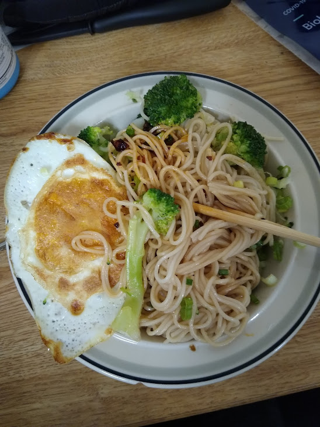

Noodle Recipe

Description
Another basic home recipe
Ingredients
- Noodles (some kind of Asian noodle)
- 1 egg (to fry or hard boil)
- Broccoli (or bok choy), chopped
- Soy sauce
- Vinegar
- Garlic powder
- Salt
- Chili oil
- Garlic, minced (if frying egg)
- Some kind of cooking oil (like olive oil)
Steps
- Bring water to boiling.
- Follow the instructions of your noodles to cook them in the water.
- At the last minute or two, toss in the broccoli/bok choy.
- Scoop the noodles and vegetables out.
- If hardboiling the egg, do it simultaneously while cooking the noodle in a separate pot.
- To hardboil an egg, cover it in water with a pot, bring the water to a boil, turn off the stove and put the lid on the pot, wait 9-10 minutes.
- If frying an egg, put oil in a pan, wait for it to heat up, then crack the egg in. As the egg is frying toss the garlic in too.
- Put everything in a bowl, and then put oil, soy sauce, vinegar, garlic powder, and chili oil in it.
- Add salt if necessary.